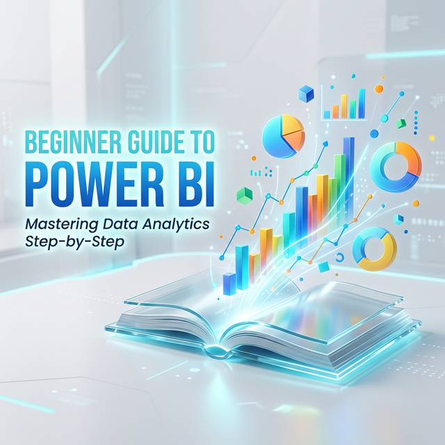

Microsoft Power BI is incredibly approachable for beginners but houses immense complexity under the hood for advanced users. Getting started can feel overwhelming, but this guide will break down the essential first steps.
Phase 1: Get Data (Power Query)
The first step in any Power BI project is importing your data. Power BI connects to hundreds of sources (Excel, SQL Servers, Salesforce, Web APIs). When you hit the "Get Data" button, you enter the realm of Power Query.
Power Query is where the magic happens. Here, you clean and transform your data—removing null values, splitting columns, and changing data types. The best part? Power Query records all these steps, so the next time your data updates, it automatically applies the same cleaning processes.

Phase 2: Data Modeling
Once your tables are clean, you need to tell Power BI how they relate to each other. This is done in the "Model View". A common structure is the Star Schema, where a central "Fact Table" (e.g., Sales Data) is surrounded by "Dimension Tables" (e.g., Dates, Products, Customers).
Phase 3: DAX (Data Analysis Expressions)
DAX is the formula language of Power BI. While basic aggregation (Sums, Averages) works out of the box, DAX allows you to create complex calculations, like Year-Over-Year Growth or rolling 30-day averages.
Phase 4: Creating the Visuals
Once your model is built and calculations are ready, you finally move to the reporting canvas. Here you drag and drop fields into charts, graphs, and matrices. The key to good dashboard design in this phase is restraint: keep it simple, clear, and actionable.